1
Comprendre
Pourquoi cette grève ? En quoi la lutte des personnes sans papiers nous concernent toutes et tous ?
Synthèse de la situation →Pourquoi cette grève ? En quoi la lutte des personnes sans papiers nous concernent toutes et tous ?
Synthèse de la situation →Faire grève légalement, avec ou sans syndicat, et s’organiser collectivement dans son établissement ou son entreprise.
Lire le guide pratique →Génère en 2 minutes un mail clair et percutant à ton syndicat, ta fédé ou ton UD pour rejoindre la mobilisation.
Je me lance →« L'enjeu, c'est souvent de faire comprendre aux collègues l'intérêt collectif de la régularisation : égalisation des salaires, fin de la concurrence déloyale, solidarité entre métiers pénibles. »
Des quartiers populaires aux campagnes, des écoles aux lieux de travail — « Si on s’arrête, tout s’arrête ! »